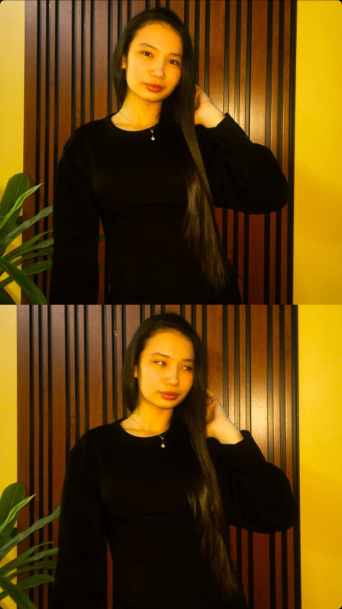

You make my world sparkle and my heart flutter. This page is just for you. 💖

From the moment I met you, my heart quietly holds hope.
Your smile brightens my days, and you are the brightest gift in my life.
This little page is a small sign of my sincere feelings and support.
Wishing you the best of luck on your exam — I believe you will do great!
May all your dreams come true.